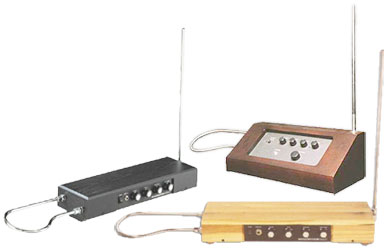

Игра на терменвоксе заключается в изменении музыкантом расстояния между своими руками и антеннами инструмента. При этом изменяется ёмкость колебательного контура и, как следствие, — частота звука[14]. Вертикальная прямая антенна отвечает за изменение тона звука, а горизонтальная подковообразная — за изменение громкости звука.
Инструмент предназначен для исполнения любых (классических, эстрадных, джазовых) музыкальных произведений в профессиональной и самодеятельной музыкальной практике, а также для создания различных звуковых эффектов (пение птиц, свист и т. п.), которые могут найти применение при озвучивании фильмов, в театральных постановках, цирковых программах.
Существует несколько разновидностей терменвокса, различающихся конструкцией. Производятся как серийные, так и штучные модели.
Со временем сложились различные школы игры на терменвоксе.
